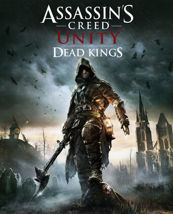

Developer: Ubisoft Montpellier
Platform: Xbox One, PlayStation 4, PC
Arno, still feeling devastated over the loss of Élise de la Serre, finds refuge in Saint-Denis, at the time, known as Franciade. He is contacted by the Marquis de Sade at a tavern, who requests his help in finding the manuscript of Nicolas de Condorcet, hidden in the tomb of Louis IX beneath the city, in exchange for a ship that would take Arno to Egypt.During his search, Arno encounters a group of tomb raiders, led by Captain Philippe Rose, a subordinate of Napoleon Bonaparte, who wishes to retrieve the artifact located within a Precursor temple, buried under the city's church. He also finds that the manuscript has been stolen by a child thief, Léon, who was captured by the raiders. Arno rescues Léon and retrieves the manuscript, but declines to help him stop the raiders. His resolve softens after an encounter with a vision of Élise, as well as hearing Léon's pleas.After discovering the location of the temple, and retrieving the key from one of Napoleon's officers, Arno finally manages to open the door to the temple. He is then ambushed by Rose, who attempts to take the artifact for himself. Arno survives the ambush, and makes it to the artifact before Rose and his men. After killing Rose, Arno retrieves the artifact, a head-shaped lantern containing a spherical Piece of Eden, and uses it to repel the raiders and escape the temple. He later meets de Sade at the tavern and delivers the manuscript as promised. Finally, Arno decides to stay in France, and contacts the Brotherhood to deliver the Piece of Eden to Egypt, far away from Bonaparte's reach.